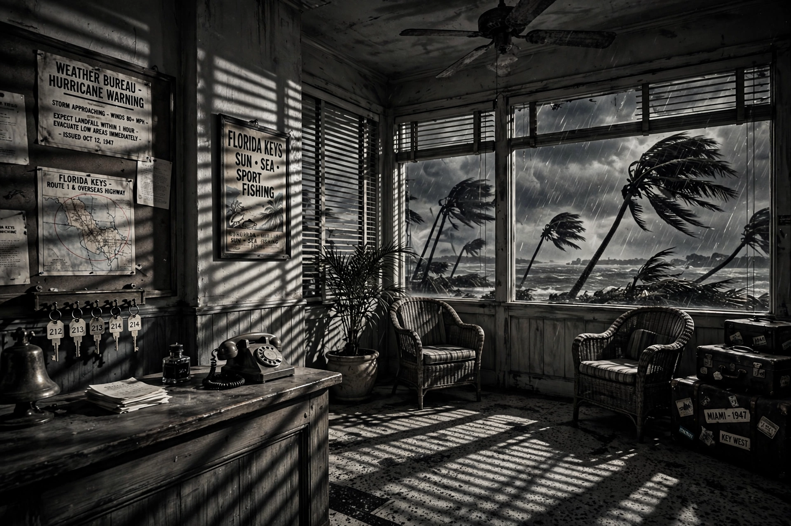

From Wikipedia, the free encyclopedia

| Directed by | John Huston |
|---|---|
| Screenplay | Richard Brooks, John Huston |
| Based on | Key Largo (1939 play) by Maxwell Anderson |
| Produced by | Jerry Wald |
| Starring | Humphrey Bogart, Edward G. Robinson, Lauren Bacall, Lionel Barrymore, Claire Trevor |
| Cinematography | Karl Freund |
| Music by | Max Steiner |
| Distributed by | Warner Bros. |
| Release date | 16 July 1948 |
| Running time | 100 minutes |
| Country | United States |
| Language | English |
Key Largo is a 1948 American film noir directed by John Huston and starring Humphrey Bogart, Edward G. Robinson and Lauren Bacall. It was the fourth and final film pairing of Bogart and Bacall. Adapted by Richard Brooks and Huston from Maxwell Anderson's 1939 stage play, the film relocates the story to a hotel in Key Largo, Florida, where a disillusioned war veteran confronts a deported gangster as a hurricane strikes.
Army veteran Frank McCloud (Bogart) arrives at the Hotel Largo to visit the family of a fallen comrade: the dead man's widow Nora (Bacall) and her wheelchair-bound father James Temple (Lionel Barrymore), who runs the hotel. The only other guests are the entourage of exiled mobster Johnny Rocco (Robinson), who is secretly planning a counterfeiting rendezvous. As a tropical hurricane traps everyone inside, Rocco's cruelty — especially toward his alcoholic former moll Gaye Dawn (Claire Trevor) — forces the apathetic McCloud to recover his moral courage. Trevor won the Academy Award for Best Supporting Actress for her performance, including a famous scene in which Rocco forces her to sing for a drink. McCloud ultimately kills Rocco aboard the gangster's boat and returns to the hotel and Nora.
The film was shot largely on Warner Bros. sound stages, with location work in Florida. Critics have read it as a post-war allegory about America's temptation to isolationism in the face of returning organised crime and demagoguery. It was a commercial success and remains one of the classic Bogart–Bacall collaborations, alongside To Have and Have Not, The Big Sleep and Dark Passage.